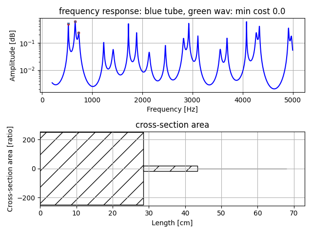

Vocal Tube Estimation 2
Estimation of two three four tube model from peak frequency.
This version uses peak frequency ratio instead of absolute value.
usage
make precomputed data of grid search to set initial value of downhill simplex method to estimate tube area and tube length.
python pre_compute3.py -t [number of tube]
[number of tube] is 2 or 3 or 4.
It will save pks_dpks_stack_tube_use_ratio[number of tube].npz.
estimate two three four tube model from peak frequency.
python pks2tube3.py --peaks [list of peak frequency]
Number of elements in [list of peak frequency] is as same as number of tube.
It will show an example of tube area and tube length.
In frequency response figure, cyan x mark means target peak frequency, and red dot mark means estimation result. They may differ some. 'min cost' means average of their difference.
Example 1: three tube model estimation
python pks2tube3.py --peaks 523.3 659.358 800

Example 2: three tube model estimation
python pks2tube3.py --peaks 523.3 659.358 730

Example 3: four tube model estimation
python pks2tube3.py --peaks 700 1100 2600 3300

Example 4: two tube model estimation
python pks2tube3.py --peaks 700 1100

License
MIT